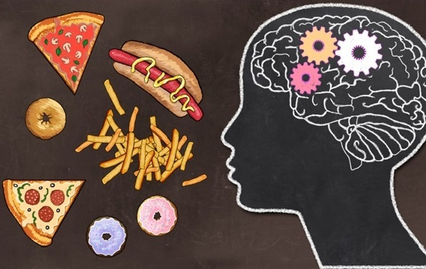

Difference of anorexia and dieting
Trigger Warning: Eating Disorders (frank discussion, numbers, thinspiration).
First What is anorexia?
Anorexia Nervosa is a psychological and potentially life-threatening eating disorder. Those suffering from this eating disorder are typically suffering from an extremely low body weight relative to their height and body type.
Often referred to as BMI (Body Mass Index) is a tool that treatment providers often use to assess the appropriateness of body weight for an individual struggling with an eating disorder. Additionally, observations of eating patterns, exercise, and personality traits may give indications of an anorexic diagnosis. Those struggling with anorexia frequently fear gaining weight and have a distorted body image. They often believe they appear much heavier than they are.
Additionally, women and men who suffer from this eating disorder exemplify a fixation with a thin figure and abnormal eating patterns. Anorexia nervosa is interchangeable with the term anorexia, which refers to self-starvation and lack of appetite.
That is, eating disorders are not diets.
So let’s take a look at five subtle differences between dieting and anorexia in hopes of shedding light on this complicated issue.
Relationship with Food
Diet: Oh, I shouldn’t. I’ll feel guilty.
Anorexia: I literally cannot put that into my mouth, I’m so anxious.
When a person on a healthy diet is weighing their options regarding food intake, a pang of guilt may creep up when working out how they might feel later on.
If I don’t stick to my meal plan, will I regret it later?
This thought process isn’t necessarily problematic. Rather, it’s the same way that we feel whenever we do something that we feel is detrimental to our ultimate goals – because we understand that meeting goals means staying steady in our progress.
But a person with a healthy relationship with food isn’t going to spend days worrying about the intake.
Their emotional well-being isn’t at stake. They feel guilt, process it, and move on.
Eating disorders, on the other hand, don’t work like that. Instead of the possible guilt associated with goal-setting, eating disorders can cause chest-constricting feelings that accompany fear whenever food is around.
Rather than feeling a desire for the food and dealing with what the consequences (positive or negative) will be if it’s eaten, like a person on a diet thinks through, the feeling is of disgust and aversion, wanting to push it away.
Relationship with Weight
Diet: I want a slimmer figure.
Anorexia: I want to count my ribs.
There’s a reason why the novel Wintergirls by Laurie Halse Anderson is often quoted in pro-eating disorder communities. It is a brilliant, accurate look into the life of an anorexic.
This thought process isn’t necessarily problematic. Rather, it’s the same way that we feel whenever we do something that we feel is detrimental to our ultimate goals – because we understand that meeting goals means staying steady in our progress.
Line after line is a perfect explanation of the internal struggle of eating disordered people.
When people decide to go on a diet, it’s usually because they want to reach a certain goal weight, one that is within healthy range.
They want to lose or gain enough weight to achieve a look that they believe will suit them. Five, ten, twenty, fifty pounds.
When people have eating disorders, there is no goal weight.
Because 120 won’t be low enough. Reach 100, and you want 99. Reach 95 and you want 85.
Just five more pounds, just five more pounds” becomes the mantra to an insatiable, unjustifiable need.
When people suffer from anorexia, they want to be weightless.
It’s the difference between wanting to look good in a bikini and wanting to walk in the snow without leaving a footprint.
Relationship with the Scale
Diet: You are an inanimate object that cannot measure my worth, only my progress.
Anorexia:Depending, you are either my best friend or worst enemy.
When I decided, about ten months ago, to buy a scale after not having one for years, I had a breakdown in the ‘BATH’ aisle at Target.
I had the same heartbreaking feelings attached had I been recalling a lost love – nostalgic for the triumphs and regretting the mistakes.
The difference between recognizing the scale as an inanimate object and personifying it as your best friend or worst enemy, depending on the number that it blinks back at you, is another distinction between dieting and anorexia.
People on healthy diets understand that a scale helps them record their progress.
People with eating disorders depend on scales for validation.
Relationship with Exercise
Diet: This makes me feel good, and it helps me achieve my goals.
Anorexia:I use this as a means of purging to punish myself.
If I ate 500 calories today, how long do I have to run in order to burn it all off?” And, side note: “I feel disgusting.
Scroll through the forums on any pro-eating disorder website and you can find pages and pages of the same kinds of questions.
Forgive me, Father, for I have sinned. How must I repent? How do I achieve rebirth? How do I rid myself of filth?
Going to the gym should be fun. It should be part of a healthy routine. It should be to work on your body out of love for your body, not out of sheer hatred.
Healthy dieting and its associated exercise is about feeling good.
Using the gym to purge is about feeling horrible.
Because there’s a difference between going to the gym to burn a couple hundred calories and forcing midnight treadmill sessions to punish yourself.
The question to ask is what’s your motivation? Are you going to the gym for health? Or are you going for attempted redemption?
Relationship with Brain
Diet: I have to follow my meal plan, but otherwise live a normal life.
Anorexia:Food controls me. It is at the center of my every thought.
When eating disorder specialists talk about the “preoccupation with food” symptom, they’re not kidding.
Some eating disordered people are so entirely fixated on food that some psychologists liken anorexia to a form of OCD – obsessively thinking about food and compulsively avoiding it.
Although food-centered thoughts also occur more frequently in people who are dieting, the difference is how much control those thoughts have over your life.
It’s the difference between paying attention to something that you haven’t before (like, say, calories or food pyramids) and not being able to think about anything else.
Because food – as well as fat and weight – is what an eating disordered person’s illness revolves around, so too can their lives.
Every second of every day is spent trying to work out how, exactly, to avoid something that healthy people can do without a second thought.
For an eating disordered person, food is less of an awareness and more of an obsession.
If you think that you might have an eating disorder – if, in reading this, you’ve recognized yourself more in that category than as a casual dieter – it’s time to seek professional help.
Reflect on what your motivations and goals are. Try to develop more positive body image. And if and when you need it, seek help.
Related Post: